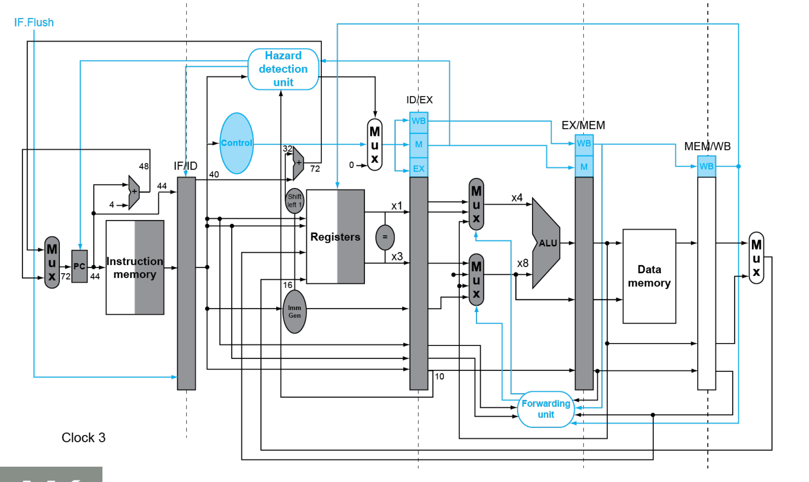

计算机组成知识点整理(4)：处理器
Last updated on June 7, 2025 pm
这是SJTU-ICE2603《计算机组成》课程的知识点整理系列。本文整理部分为“第4章：处理器”。
4.1 单周期实现
4.1.1 指令执行过程
- 根据当前 PC 值取指
- 读取寄存器
- 用 ALU 计算
- 算术运算结果
- 用于取数 / 存数的存储器地址
- 分支比较
- 访问数据存储器以取数 / 存数
- PC + 4 或 指向目标地址
4.1.2 逻辑设计基础
- 组合单元：
- 输出仅依赖于当前输入
- 没有存储功能
- 如：ALU
- 状态（时序）单元：
- 可以存储信息
- 如：存储器、寄存器
4.1.3 数据通路

4.1.4 单周期实现的缺点
- 时钟周期过长：为满足最长指令路径，导致周期过长
- 扩展性差：无法支持浮点运算等复杂指令
- 吞吐量低：CPI = 1 但周期过长，实际吞吐量低
4.2 流水线实现
流水线是期末考试大题重点，十分重要。
4.2.1 五级流水线
- IF：从指令存储器中读取指令
- ID：指令译码以及读寄存器
- EX：执行操作或计算地址
- MEM：访问存储器操作数（如有）
- WB：将结果写回寄存器（如有）
4.2.2 流水线性能
- 若各阶段操作平衡（即耗时相同），
- 流水线通过提高指令吞吐率来提高性能，但不能减少单个指令的执行时间
4.2.3 流水线冒险
结构冒险
- 原因：所需资源正被占用
- 举例：第一条指令从存储器取数据的同时，第四条指令从同一存储器取指令
- 策略：分离指令和数据存储器或 Cache
数据冒险
-
原因：需要等待先前的指令完成数据读写
-
举例：一条加法指令后面紧跟着一条使用其结果的减法指令
-
策略：
- 旁路（前推）：当算出结果就直接使用，不等到结果被存入寄存器

- 对于取数-使用型数据冒险：
- 无法靠旁路来避免阻塞
- 只能 流水线停顿 或 重排代码
控制冒险
- 原因：对控制行为的决策依赖于先前的指令
- 举例：需要根据分支结果取得下一条指令
- 策略：
- 增加硬件以便在 ID 级完成比较寄存器和计算目标地址
- 分支时阻塞（一个周期）
- 分支预测
- 简单方法：预测分支不发生
- 静态预测：基于典型的分支行为
- 动态预测：保存每个分支的历史记录并据此预测未来
4.2.4 流水线的数据通路
- 增加各级间寄存器（用于保持前一周期产生的信息）
- 保留目标寄存器号

4.2.5 数据冒险
旁路条件
- EX 冒险
1 | |
- MEM 冒险
1 | |
- 考虑双重数据冒险，MEM 冒险应仅在 EX 冒险条件非真时旁路（使用最新结果）
取数-使用型冒险检测
1 | |
阻塞方法
- 强制将 ID/EX 寄存器中的控制信号置 0
- EX、MEM 和 WB 级执行空操作(nop)
- 阻止 PC 和 IF/ID 寄存器更新
4.2.6 控制冒险
缩短分支的延迟
- 将用于确定结果的硬件移到 ID 级

动态分支预测
- 采用分支预测缓存（分支历史记录表）
- 按最近的分支指令地址索引
- 保存分支结果
- 1位预测：内循环分支会被误预测两次
- 2位预测：仅在连续两次预测错误时改变
- 分支目标缓存：使用一个缓存来保存目标地址或目标指令
4.3 异常
4.3.1 异常 和 中断
- 异常：出现在 CPU 内部，如未定义的操作码、硬件故障等
- 中断：来自外部 I/O 控制器
4.3.2 异常处理
- 保存发生异常的指令地址：SEPC（系统异常程序计数器）
- 记录异常发生的原因：SCAUSE（系统例外原因寄存器）
- 跳转到处理程序：
- 操作系统读取异常原因，并跳转相应处理程序
- 决定采取的动作，如重启程序或终止程序
- 向量式中断（另一种方式）：
- 处理程序的地址由中断原因决定（基址寄存器加上异常原因偏移）
4.3.3 流水线的异常处理
- 清除流水线中之后的指令（与控制冒险处理类似）
- 将例外入口地址送给PC寄存器（执行处理程序后，回到该指令）
- 将引发异常的指令地址保存在 SEPC 寄存器中
4.3.4 多重异常
- 多重异常：同一个周期内可以同时发生多个异常
- 对例外进行优先级排列，便于判断服务顺序
- 非精确异常：流水线中的异常并未和引发该异常的指令精确对应
- 在复杂的流水线中，维持精确异常很困难
- 让操作系统判断引发了异常的指令
4.4 指令级并行
4.4.1 多发射
- 提高指令级并行度的方法：
- 增加流水线的级数
- 多发射：一个时钟周期内发射多条指令
- 多发射处理器的实现方法：
- 静态多发射：指令发射与否的判断在编译时完成
- 动态多发射：指令发射与否的判断在动态执行过程中由硬件完成
- 多发射处理器的主要任务：
- 将指令打包并放入发射槽
- 处理数据和控制冒险
4.4.2 推测
- 推测：允许编译器或处理器猜测指令的行为，并允许其他与被推测指令相关的指令提前开始执行
- 要检查预测结果是否正确
- 若预测错误，要进行恢复
- 编译器推测：
- 根据推测结果重排指令
- 可以包含从错误中恢复的指令
- 硬件推测：
- 缓存结果，直至确定结果被用到
- 若推测错误，则清除缓存
- 推测产生异常：
- 静态推测：增加 ISA 对延后异常的支持
- 动态推测：在指令完成之前缓存异常
4.4.3 静态多发射
- 由编译器来支持指令打包和处理冒险
- 指令打包：
- 将指令分组为发射包（同一周期内被发射的指令）
- 一个发射包可看作一条超长指令字
- 处理冒险：
- 静态分支预测
- 代码调度
- 指令打包：
- 数据冒险：
- 同一发射包中的取数 / 存数指令无法使用 ALU 结果
- 取数-使用型冒险仍延迟一个周期
- 循环展开：复制循环体以展现更高的并行度
- 寄存器重命名：避免循环带来的“反相关”
4.4.4 动态多发射
- 又称超标量，由硬件来判断当前周期发射的指令数，避免了对编译器调度的需求
- 动态流水线调度：用硬件对指令执行顺序进行重排，避免阻塞
- 按序发射、乱序执行、按序提交
- 结果要按顺序提交给寄存器（重排序缓冲）
- 保留站和重排序缓冲区实际上提供了寄存器重命名
- 推测：在推测结果确定之前不提交分支 / 取数操作
- 使用动态调度的原因：
- 不是所有阻塞都可预测（如 cache 缺失）
- 无法总是对分支做静态调度
- 同一 ISA 的不同实现有着不同的延迟和冒险
- 负面影响：处理器的功耗增大，能效降低
历年真题
- ALU属于
- A：组合逻辑电路
- B：时序电路
- C：控制器
- D：寄存器
- 下列对有关 5 级简单流水线的冒险描述不正确的有
- A：结构冒险会引起流水线停顿
- B：Load 指令有可能会引起不得不停顿的数据冒险
- C：转移冒险可以通过采用转移预测技术减少流水线转移代价
- D：使用数据直通（旁路）技术可以解决所有的数据冒险
-
（大题）手动模拟流水线运行，判定有无数据冒险，算总时间
-
（大题）流水线和单周期的对比计算，算时钟周期
Reference
https://gist.github.com/smallaccount101/6324d7c82d103783f21b7cc6da7d0f7c
注：本文中部分图片来自《计算机组成与设计·硬件/软件接口》。
计算机组成知识点整理(4)：处理器
https://cny123222.github.io/2025/04/01/计算机组成知识点整理-4-：处理器/